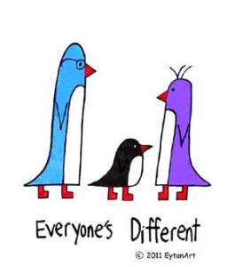

Traveling with children on the Autism Spectrum or with other special needs.
Parents of children on the autism spectrum or with many other special needs, have all experienced the looks and comments from strangers in supermarkets, stores, restaurants or hotels when they see a child behaving in an unusual way and immediately attribute it to poor parenting and/or a spoiled child. Often children with autism are not easy to identify from their appearance and so their behavior or sounds can take the untrained bystander by surprise. I personally found that by telling those bystanders that my son has autism, I was able to shift their expression from disapproval to compassion and therefore make myself more comfortable. Although some children on the spectrum are aware of their own limitations and are bothered by this, my son Eytan couldn’t have cared less what people said about him or how they looked at him – but I did care. Today when we travel we also pack some of our EytanArt T-shirts (drawn by Eytan) because the designs and messages on them are about respecting differences and we hope they’ll remind people around us to be tolerant and patient. See the EytanArt designs here.
The challenges of traveling with a child who has autism
When Eytan was young, our family vacations consisted of going to visit one set of grandparents or the other. Luckily they both had homes close to beaches and water is always a happy place for Eytan and my other children. With grandparents there to watch Eytan, my husband and I were able to get out by ourselves or with the other children a few evenings. But other than the trips to grandparents, we found that traveling with our 3 children was challenging. There were things that Eytan couldn’t tolerate that the rest of us wanted to do. Restaurants we wanted to eat in where there was nothing he would eat. There were shows or films or museums that we couldn’t see if Eytan was with us because it was hard for him to be quiet for long periods of time. During most school vacations we stayed home and one parent would take the other children to do fun things while the other parent did activities with Eytan. Although we always managed to have a good time, I still felt badly that we could never take family vacations all together to interesting places.
Making it easier to travel with your autistic or disabled child.
I recently was introduced to Alan Day, a travel agent and the parent of a child on the autism spectrum. His child attends the same school that we helped to create when Eytan was young. Because of his own experiences traveling with his child, he realized that there was a need to help families who wanted to take family vacations with their autistic or disabled child. He combined his many years of experience and connections as a travel agent with his understanding and compassion for the needs that these children and families have, and created a service to help other families. http://www.asdvacations.com/
Whether on land or sea, in a group or as a single family, our approach is always the same. As special needs travel agents, we ensure that our special needs guest is safe, has fun and receives dedicated special care. This way, the other family members can relax, have fun, make use of all of the facilities that the ship/resort has to offer or do absolutely nothing and chill out.
Susan Nisinzweig